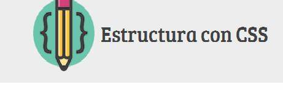
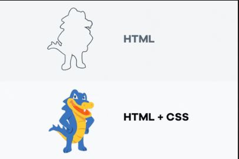
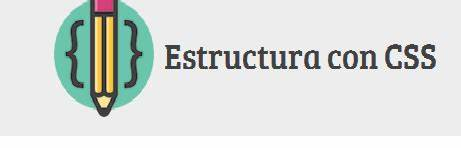
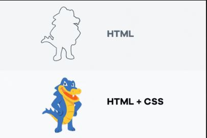

Recurso Digital 1 Fundamentos de CSS
Css permite ofrecerel un formato de diseño a las etiquetas de HTML
Audio de apoyo para recurso fundamentos Css
Con Html se delinea la estructura de la pagina web y Css le ofrece el color y el diseño
Css permite ofrecerel un formato de diseño a las etiquetas de HTML
Audio de apoyo para recurso fundamentos Css
Con Html se delinea la estructura de la pagina web y Css le ofrece el color y el diseño
